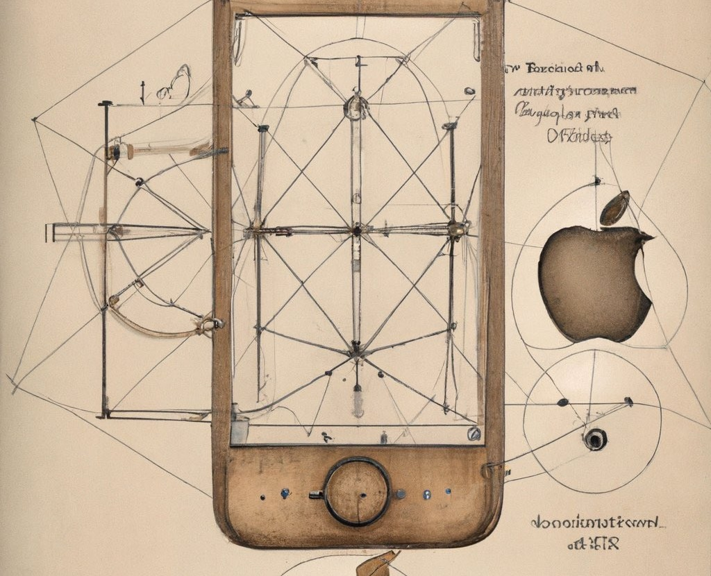
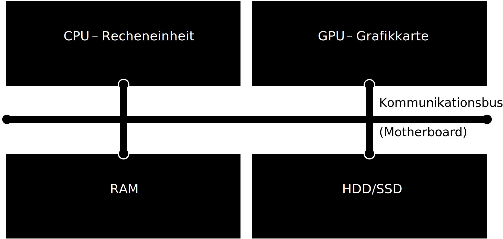
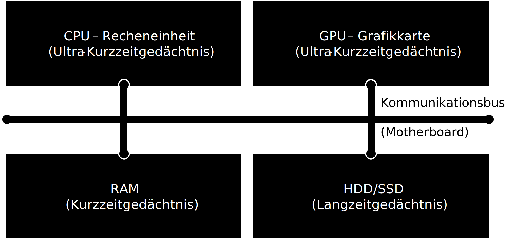
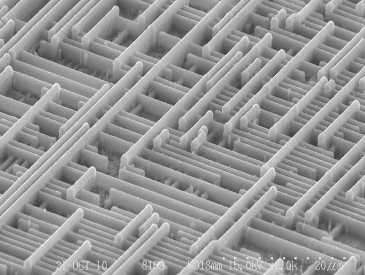
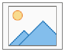
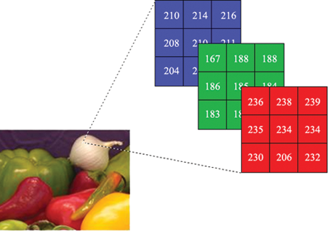
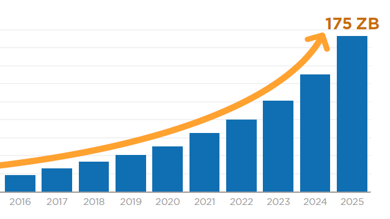
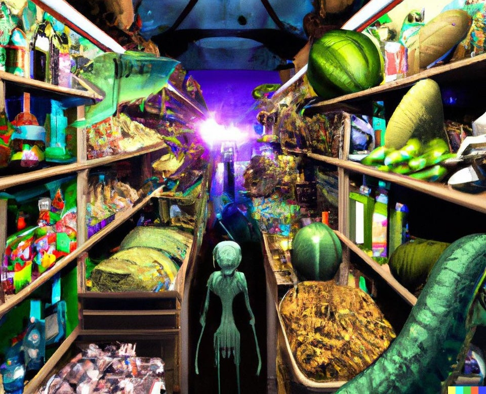

Programmierung
und Datenbanken
Computer
Joern Ploennigs
Überblick

Slide 2
Computer Grundlagen
Definition - Informatik
Definition: Informatik
Ein Computer ist ein Gerät, das mittels programmierbarer Rechenvorschriften Daten verarbeitet
Ursprung: Mathematik (Logik, Algorithmen) + Elektrotechnik (Hardware)
Hörsaalfrage
Welche Computer-Arten gibt es?
Welche Computer-Arten gibt es?
- Supercomputer – Spezielle Computer mit sehr vielen CPUs und GPUs zur hochparallelen Verarbeitung komplexer Probleme (z. B. Wettersimulation)
- Mainframe – Spezielle Großrechner mit sehr hoher Zuverlässigkeit z. B. in Banken
- Server – Computer in Rechenzentren ohne Bildschirm für das Internet oder Cloud-Computing
- Personal Computer (PC) – Desktop Computer in Büros oder daheim für Arbeit, Spielen, etc.
- Laptops – Mobile Computer unterwegs fürs arbeiten, spielen, studieren
- Smartphones – Mobiler Rechner mit Touchscreen und wenig Telefonfunktion
- Tablets – Mobiler Computer mit viel Touchscreen und ohne Telefonfunktion
- Eingebettete Computer – kleine Rechner in Autos, Robotern und Smart-Homes
Hörsaalfrage
Aus welcher Hardware besteht ein Computer?

Computer Hardware
Computer Hardware
Der Computer hat die gleichen Gedächtnisarten wie der Mensch
- CPU und GPU haben kleine Register und Cache Speicher (Ultra-Kurzzeitgedächtnis)
- Der RAM ist ein volatiler Speicher, d. h. der Inhalt geht beim Ausschalten verloren (Kurzzeitgedächtnis)
- Die HDD/SSD ist ein permanenter Speicher, d. h. der Inhalt bleibt erhalten (Langzeitgedächtnis)
CPU – Central Processing Unit
Die CPU ist die Recheneinheit des Computers um Daten zu verarbeiten Sie bearbeitet eine Sequenz an Befehlen (Ein Programm)
Eine CPU besteht aus Millionen an Transistoren die nur wenige Nanometer (1000000nm=1cm) groß sind Wenige Transistoren können nur eine einzelne logische Operation berechnen

Binären Zahlen
Computer speichern, verarbeiten & kommunizieren Daten als binären Zahlen, weil Transistoren in einem Gatter nur logische Operationen ausführen können.
binarius – Zweifach, doppelt
Das kleinste mögliche (nützliche) System von Zeichen
Mögliche Repräsentationen von Binärcode:
- 0 / 1
- Falsch / Wahr
- Aus / An
Binären Zahlen – Mathematik
Unsere dezimalen Zahlen lassen sich als Binärzahlen codieren
Binärzahlen erlauben dieselben bekannten Grundrechenarten wie Dezimalzahlen also Addition, Subtraktion, Multiplikation und Division
So kann der Computer mit dezimalen Zahlen rechnen
Im Computer werden Zahlen auch oft hexagonal (Basis 16) codiert, da sich somit ein Byte (8 Bits) in 2 Zeichen beschreiben lassen
Hörsaalfrage
Wie Weit kann man mit 10 Fingern Zählen?

Abbildung von Zeichen im Computer
- Buchstaben in Texten werden im Computer binär codiert
- ASCII: Textzeichen gespeichert in 8 Binärwerten (8 Bit = 1 Byte)
- Binäre Codierung zieht sich vom niedrigsten Hardwarelevel bis hoch zur alltäglichen Anwendung

Abbildung von Bildern im Computer
Bilder werden im Computer auch binär codiert
Hierbei wird ein Bild in Pixel eingeteilt (Auflösung)
Die Farbe in jedem Pixel wird dann als Zahl gespeichert, z. B. True Color RGB (16,777,216 colour variations):
- Blau – 0 … 256 (= 1 Byte)
- Grün – 0 … 256 (= 1 Byte)
- Rot – 0 … 256 (= 1 Byte)
Die Zahlen werden dann binär codiert, z. B. als 24 Bit (1 Byte = 8 Bit; 3 * 8 Bit = 24 Bit)

Achtung Der Unterschied im Computer
Aufgrund der binären Darstellung werden übliche Einheitenvorsätze wie Kilo-, Mega-, etc. auf Basis von 1024 und nicht auf Basis von 1000 definiert

Daten Wachstum
- Die Größe der erzeugten Daten wächst zunehmend.
- Sie werden in Zukunft vor sehr vielen Daten konfrontiert werden.
- Der Computer muss Ihnen helfen diese Daten zu analysieren durch Informatik.

Hörsaalfrage
Wie viele Sensoren hat ein Supermarkt?

Beispiel – Tesco Irland
- Die Supermarktkette Tesco hat sehr früh in Sensoren und Monitoringsysteme der Supermärkte mit dem Ziel Energie einzusparen investiert
- Die gesammelten Daten wurden so schnell so groß, dass niemand sie analysieren konnte
- Durch maschinelle Lernmodelle konnte IBM Research die Daten analysieren und half Ihnen 20% des Kühlbedarfs einzusparen

programmierung
und datenbanken